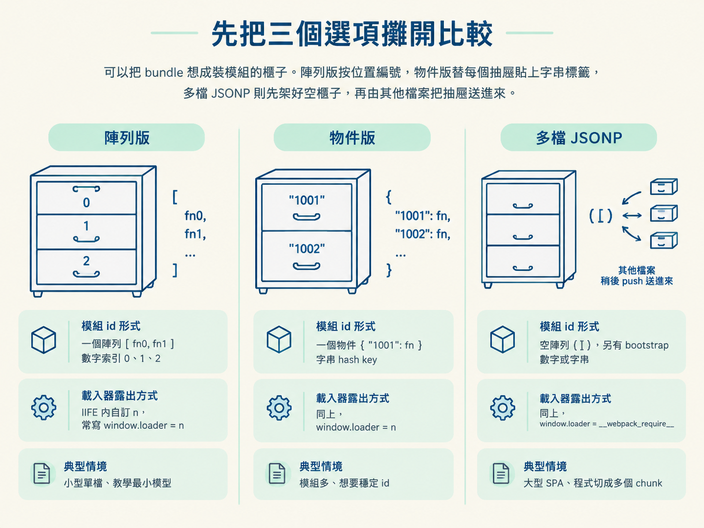
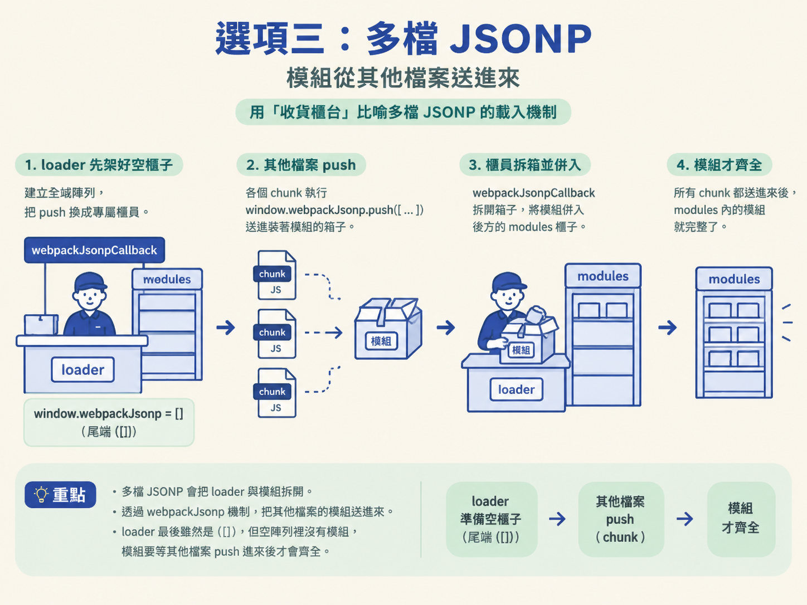
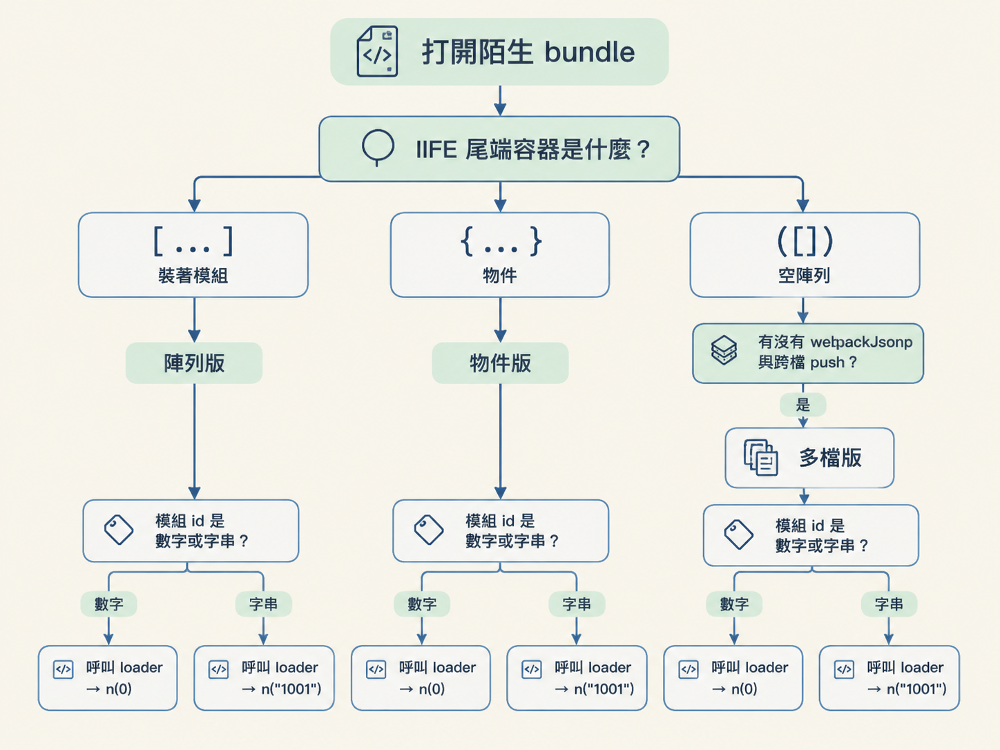

你在 DevTools 打開一支打包後的 JavaScript，準備找出產生簽名參數的模組。眼前卻可能出現兩種拉扯：模組到底就在這支檔案裡，還是由其他 chunk 稍後送進來？呼叫時又該用數字索引，還是字串 key？
如果型態判錯，後面每一步都會歪掉。你可能對著多檔 bundle 一直找不存在的模組陣列，也可能把物件版當成陣列版，輸入 n(0) 後只得到 undefined。
這一節要練的不是背定義，而是看到 bundle 後，能迅速判斷它屬於陣列版、物件版或多檔 JSONP。判斷完成後，你也要能回答兩個實際問題：模組 id 長什麼樣，以及 require 函式應該從哪裡接出來。
前置條件：你已經看懂上一節介紹的 IIFE 骨架與 require 函式。接下來只要打開檔案，沿著幾個固定線索往下看。
可以把 bundle 想成裝模組的櫃子。陣列版按位置編號，物件版替每個抽屜貼上字串標籤，多檔 JSONP 則先架好空櫃子，再由其他檔案把抽屜送進來。
| 型態 | IIFE 尾端傳入什麼 | 模組 id 形式 | 載入器怎麼露出 | 典型情境 |
|---|---|---|---|---|
| 陣列版 | 一個陣列 [ fn0, fn1 ] | 數字索引 0、1、2 | IIFE 內自訂 n，常寫 window.loader = n | 小型單檔、教學最小模型 |
| 物件版 | 一個物件 { "1001": fn } | 字串 hash key | 同上，window.loader = n | 模組多、想要穩定 id |
| 多檔 JSONP | 空陣列 ([])，另有 bootstrap | 數字或字串 | window.loader = __webpack_require__ | 大型 SPA、程式切成多個 chunk |

先在 DevTools 打開 bundle，拉到 IIFE 的尾端。若看到一串模組函式被放進陣列，這就是陣列版。每個模組的身分，就是它在陣列裡的位置，因此 id 會是 0、1、2 這類數字索引。
}([
function () {
console.log("foo");
this.exports = 100;
},
function () {
console.log("bar");
}
]);這個案例的尾端是 }([ … ])。要呼叫第一個模組就用 n(0)，第二個則用 n(1)。
這個判法適合尾端陣列裡已經裝著模組函式的單檔 bundle。不適合只看見空陣列就直接下結論，因為多檔 JSONP 的 loader 尾端也可能出現 ([])。
陣列版的缺點是，只要中間插入或刪除一個模組，後面的索引就會跟著位移。因此它較常出現在教學範例或小工具，不是大專案常見的選擇。
如果 IIFE 尾端不是陣列，而是一個「編號對函式」的物件，就要改用物件版的思路。它的模組 id 是字串，可能是 "1001"、"1002"，也可能是 "56d7"、"dd88" 這種看似隨機的 hash。
}({
"1001": function () {
console.log("foo");
// 前端操作
let ele = document.createElement("span")
console.log(navigator.userAgent)
this.exports = 100; // 直接修改 exports 变量
},
"1002": function () {
console.log("bar");
// window.loader("1003")
this.exports = 200;
}
});
window.loader("1002")這裡要注意呼叫方式。既然 id 是字串 key，就應該使用 window.loader("1002")，而不是照陣列版輸入 n(0)。
原始碼中被註解的 // window.loader("1003") 也透露了另一個線索：模組之間可以透過同一個 window.loader，報上另一個模組的編號來互相呼叫。
這個判法適合尾端容器明確是物件，而且模組函式掛在字串鍵下的 bundle。字串 key 不會因為中間插入一個模組就整批位移，因此穩定性較好，也是實務上常見的單檔型態。
多檔 JSONP 最容易讓人走錯路。前兩種型態都是一支檔案自給自足；多檔版則把 loader 與模組拆開。loader 檔可能只有幾百行，真正的模組放在旁邊其他 JS 檔案裡，再透過 webpackJsonp 機制送進來。
!(function (modules) { // webpackBootstrap
…
function webpackJsonpCallback(data) {
var chunkIds = data[0];
var moreModules = data[1];
var executeModules = data[2];
…
for (moduleId in moreModules) {
if (Object.prototype.hasOwnProperty.call(moreModules, moduleId)) {
modules[moduleId] = moreModules[moduleId];
}
}
…
};
…
function __webpack_require__(moduleId) {
…
console.log("moduleId:::", moduleId)
…
modules[moduleId].call(module.exports, module, module.exports, __webpack_require__);
…
}
window.loader = __webpack_require__
…
var jsonpArray = window["webpackJsonp"] = window["webpackJsonp"] || [];
var oldJsonpFunction = jsonpArray.push.bind(jsonpArray);
jsonpArray.push = webpackJsonpCallback;
…
})
…
/******/ ([]);在 DevTools 搜尋 webpackBootstrap、webpackJsonpCallback、__webpack_require__ 或 window["webpackJsonp"]。這幾個記號一起出現時，通常就能判定正在處理多檔版。
它的運作方式像一個收貨櫃台。loader 先把全域的 window.webpackJsonp 準備成陣列，再把原本的 push 換成 webpackJsonpCallback。之後其他模組檔執行 window.webpackJsonp.push([ … ]) 時，送進來的模組就會被 callback 併入 loader 的 modules。
因此，這個 loader 尾端雖然是 ([])，卻不能當成一般陣列版。這個空陣列裡沒有模組；模組要等其他檔案 push 進來後才會齊全。

這種判法適合大型 SPA 或拆成多個 chunk 的站點。不適合只憑中括號判斷，因為真正的關鍵不是「有沒有陣列」，而是「模組是否依賴其他檔案送進來」。
看到一支陌生 bundle 時，不必從第一行一路讀到最後。先查看 IIFE 尾端，再搜尋 JSONP 關鍵字，依序問自己：
[、{，還是空陣列 ([])？webpackJsonp、webpackJsonpCallback、jsonpScriptSrc 這幾個字？n(0) 這種數字，還是 n("1001") 這種字串？第一題先辨認容器，第二題檢查是否存在跨檔載入機制。第三題用來確認模組 id 的形式，第四題則幫你判斷真正的模組是否藏在其他檔案裡。
如果找到 JSONP 關鍵字，先別急著定案。還要確認模組是不是靠另一支檔案的 push 才出現；若沒有 JSONP 機制，再回頭看尾端容器究竟是陣列還是物件。
辨認 bundle 不能只抓一個符號。以下幾種情況最容易讓判斷翻車：
([])，確實有中括號，但裡面沒有模組。此時應改查有沒有 webpackJsonp 機制。webpackJsonp。有些站點把整包模組放在同一支檔案，卻仍保留 JSONP 機制。這時不能只靠關鍵字判斷，要檢查模組是否真的依賴另一支檔案的 push 才會出現。"1001" 時，別把它當成陣列索引。它的本質是物件的字串鍵，對應的值仍是模組函式。先看 IIFE 尾端的容器：裝著模組的[ … ]是陣列版，{ … }是物件版；若尾端是空的([])，又能找到webpackJsonp與跨檔push，就是多檔版。最後再確認 id 是數字還是字串，決定呼叫 loader 時要交出哪一種 key。

型態判對之後，你才知道 require 函式要從哪裡接出來，也知道該拿什麼編號呼叫模組。下一節會把 require 接到 window.loader，加入 log 記錄模組 id，再逐一呼叫，直到定位出產生簽名參數的模組。